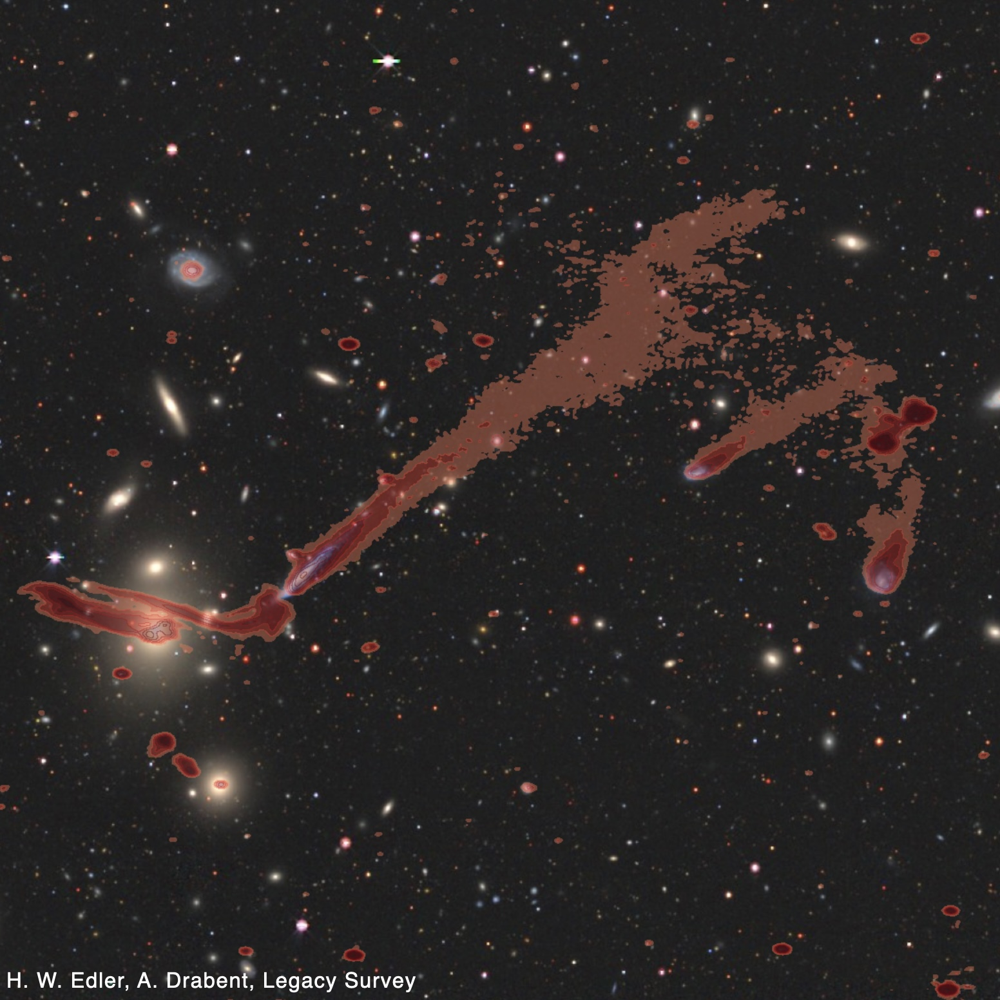

Galaxy evolution
I study how the galaxies we observe in our Universe evolved, and how they interact with their surroundings. Radio observations are central to understanding the processes that shape galaxies: they trace the magnetic fields and energetic particles in and around galaxies, which regulate their star formation and gas supply. In particular, I am interested in how the star-formation process is connected to the radio emission of galaxies, and how ram pressure stripping transforms cluster galaxies. Low-frequency radio observations are an excellent probe of ongoing ram pressure stripping, since they allow us to detect the radio tails of stripped non-thermal plasma (see image).